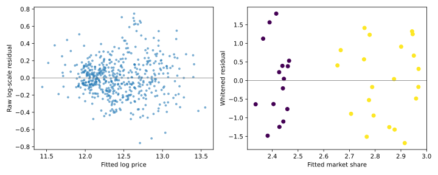

IIT Hyderabad · NPTEL · Independent study edition
Heteroscedasticity and variance-aware regression
15.1 A fitted mean does not specify the noise
A house-price model may make larger absolute errors on expensive houses than on inexpensive houses. This need not imply that its conditional mean is biased. It means that a single error variance may fail to describe the observations. The distinction determines whether to change the mean model, the coefficient estimator, the standard errors, or more than one of them.
For a fixed full-column-rank design $\mathbf X\in\mathbb R^{n\times q}$, let $\mathbf y=\mathbf X\boldsymbol\beta+\boldsymbol\varepsilon$ and assume $E(\boldsymbol\varepsilon\mid\mathbf X)=\mathbf0$. Write the conditional error covariance as $\boldsymbol\Omega$. Heteroscedasticity means that its diagonal entries are not all equal. In the independent-error case, $\boldsymbol\Omega=\operatorname{diag}(\sigma_1^2,\ldots,\sigma_n^2)$. Nonzero off-diagonal entries additionally describe dependence, which is a distinct issue.
Define $\mathbf A=(\mathbf X^T\mathbf X)^{-1}\mathbf X^T$. Ordinary least squares has $\widehat{\boldsymbol\beta}_{O}=\mathbf A\mathbf y=\boldsymbol\beta+\mathbf A\boldsymbol\varepsilon$. Taking conditional expectation and covariance gives
$$E(\widehat{\boldsymbol\beta}_{O}\mid\mathbf X)=\boldsymbol\beta,\qquad \operatorname{Cov}(\widehat{\boldsymbol\beta}_{O}\mid\mathbf X)=\mathbf A\boldsymbol\Omega\mathbf A^T.\tag{15.1}$$
Mean-zero errors preserve unbiasedness. Unequal variances change its covariance and generally invalidate the conventional formula $\widehat\sigma^2(\mathbf X^T\mathbf X)^{-1}$. They do not necessarily increase every coefficient's variance relative to every imagined constant-variance model: a comparison requires a specified reference covariance. The relevant efficiency comparison below holds for the same actual covariance and different estimators.
Residual-versus-fitted plots can suggest a changing spread. Curvature can instead indicate a wrong conditional mean, and groups with different means can produce apparent fanning when pooled. Establish the scientific units and inspect plausible mean misspecification before fitting a variance model.
Even with a correct mean, squared residuals are not direct observations of the individual error variances. Writing $\mathbf M=\mathbf I-\mathbf H$, we have $E(e_i^2\mid\mathbf X)=(\mathbf M\boldsymbol\Omega\mathbf M^T)_{ii}$. Under homoscedasticity this reduces to $\sigma^2(1-h_{ii})$; under heteroscedasticity the discrepancy from $\sigma_i^2$ can have either sign. Interpret a residual pattern in the context of the fitted mean, leverage, and covariance model.
Source: Heteroscedasticity 1, 05:29, and the model discussion at 15:18.
15.2 Whitening and generalized least squares
Suppose $\boldsymbol\Omega$ is known and positive definite. This is stronger than being a covariance matrix: a covariance can be merely positive semidefinite and singular. Positive definiteness permits an inverse and a square-root transformation. Choose an invertible matrix $\mathbf L$ satisfying $\mathbf L\boldsymbol\Omega\mathbf L^T=\mathbf I$. Premultiplying the model gives transformed errors with identity covariance.
Least squares on $\mathbf L\mathbf y$ and $\mathbf L\mathbf X$ minimizes $(\mathbf y-\mathbf X\boldsymbol\beta)^T\boldsymbol\Omega^{-1}(\mathbf y-\mathbf X\boldsymbol\beta)$. Differentiating this quadratic and solving its normal equation gives the generalized least-squares estimator
$$\widehat{\boldsymbol\beta}_{G}=(\mathbf X^T\boldsymbol\Omega^{-1}\mathbf X)^{-1}\mathbf X^T\boldsymbol\Omega^{-1}\mathbf y,\qquad \operatorname{Cov}(\widehat{\boldsymbol\beta}_{G}\mid\mathbf X)=(\mathbf X^T\boldsymbol\Omega^{-1}\mathbf X)^{-1}.\tag{15.2}$$
The covariance expression follows by inserting $\boldsymbol\Omega$ between the coefficient map and its transpose and canceling $\boldsymbol\Omega^{-1}\boldsymbol\Omega$. It does not require normality. Normality supplies exact distributional inference when the covariance is known or known up to a common estimated scale.
Proposition 15.1 (proved here). For the same design and positive-definite error covariance, GLS has covariance no larger than OLS in the positive-semidefinite matrix order.
Let $\mathbf B=(\mathbf X^T\boldsymbol\Omega^{-1}\mathbf X)^{-1}\mathbf X^T\boldsymbol\Omega^{-1}$ and $\mathbf C=\mathbf A-\mathbf B$. Both $\mathbf A\mathbf X$ and $\mathbf B\mathbf X$ equal the identity, so $\mathbf C\mathbf X=0$. Also $\mathbf B\boldsymbol\Omega=(\mathbf X^T\boldsymbol\Omega^{-1}\mathbf X)^{-1}\mathbf X^T$, giving $\mathbf B\boldsymbol\Omega\mathbf C^T=0$. Expanding $(\mathbf B+\mathbf C)\boldsymbol\Omega(\mathbf B+\mathbf C)^T$ leaves $\mathbf B\boldsymbol\Omega\mathbf B^T+\mathbf C\boldsymbol\Omega\mathbf C^T$. For every vector $\mathbf u$, $\mathbf u^T\mathbf C\boldsymbol\Omega\mathbf C^T\mathbf u\ge0$. Thus the covariance difference is positive semidefinite. Equality is possible; strict improvement in every direction is not guaranteed. ∎
For independent errors, whitening divides row $i$ of both response and design by the standard deviation $\sigma_i$, including its intercept entry. Equivalently, weighted least squares uses weights $w_i=1/\sigma_i^2$ in $\sum_iw_i(y_i-\mathbf x_i^T\boldsymbol\beta)^2$. Dividing by the variance instead would apply weights $1/\sigma_i^4$ and solve another problem. Multiplying every weight by one positive common constant preserves the coefficient estimates.
In practice, variances are usually estimated. Feasible GLS replaces the true covariance by a fitted one. It does not automatically inherit every finite-sample property of known-covariance GLS, especially when weights depend on the same responses. A variance fit must remain positive. Modeling log variance is one way to enforce that; clipping a negative predicted variance needs an explicit rule. Diagnostics of a weighted fit should distinguish raw residuals from whitened residuals $\sqrt{w_i}e_i$. Correctly specified heteroscedastic errors need not produce equal raw residual spread.
Source: Heteroscedasticity 2, 05:13. Weight semantics: statsmodels WLS.
15.3 Goldfeld-Quandt: a test with a specified ordering
The Goldfeld-Quandt comparison is designed for a possible change in variance along a chosen ordering variable. Sort the observations by that variable, omit a chosen central block if desired, and fit the same regression specification separately to the lower and upper retained blocks. Let their sizes be $n_1,n_2$, their common full design rank be $q$, and their residual sums of squares be $S_1,S_2$. Assume $n_1>q$ and $n_2>q$ so both residual variance estimates have positive degrees of freedom.
Under independent Gaussian errors with common variance and a correct mean model in both blocks, $S_j/\sigma^2$ has a chi-square distribution with $n_j-q$ degrees of freedom. The blocks involve disjoint independent errors, so these quadratic forms are independent. Therefore
$$F=\frac{S_2/(n_2-q)}{S_1/(n_1-q)}\sim F_{n_2-q,n_1-q}.\tag{15.3}$$
This derives the reference ratio from two independent variance estimates. For an increasing-variance alternative, use the upper tail. A decreasing alternative reverses the relevant tail; a two-sided test needs its own p-value rule. Equal block sizes are convenient but not required. Choosing an ordering, central deletion, or alternative after examining the results changes the procedure and its nominal interpretation. The test does not detect every possible nonconstant variance pattern.
The laboratory specifies an increasing alternative, 120 observations ordered by a constructed predictor, two retained blocks of 50, and 20 omitted middle observations. Each block estimates two coefficients, giving degrees of freedom $(48,48)$. The direct residual-variance ratio equals statsmodels' statistic: $F=10.129821645$, with p-value approximately $1.55730689\times10^{-13}$. This is a seeded synthetic check of the translated algorithm, not a claimed reproduction of the lecturer's petroleum CSV.
A heteroscedasticity-consistent covariance estimate offers another response to unequal variances when the mean model remains useful. The basic HC0 estimator substitutes squared fitted residuals into the diagonal covariance:
$$\widehat{\operatorname{Cov}}_{HC0}(\widehat{\boldsymbol\beta}_{O})=(\mathbf X^T\mathbf X)^{-1}\mathbf X^T\operatorname{diag}(e_i^2)\mathbf X(\mathbf X^T\mathbf X)^{-1}.\tag{15.4}$$
This is an estimator, not an exact finite-sample identity. Its usual justification is large-sample behavior under independent observations, a correctly specified conditional mean, adequate moment and design regularity, and leverage that does not concentrate on a few rows. HC1, HC2, and HC3 alter finite-sample or leverage corrections. Such standard errors leave the OLS coefficients unchanged and do not themselves address serial dependence or an incorrect conditional mean. They should be named when reporting results rather than called simply “robust.”
Source test: Heteroscedasticity 2, 00:16; implementation: statsmodels Goldfeld-Quandt. The HC discussion is an authored extension of the covariance identity.
15.4 Transforming units changes the question
The source considers logarithmic responses and per-capita quantities as remedies. They can be useful when their scale matches the scientific mechanism. A multiplicative disturbance can become additive after a logarithm. A state total can share an obvious scale dependence with population. However, a smaller numerical residual after changing units is not evidence by itself that prediction improved.
If a response is rescaled from dollars to thousands of dollars, its residuals shrink by the conversion factor with no improvement in the fitted information. A log residual and a raw monetary residual have different meanings. Likewise, a petroleum-total residual cannot be directly compared with a per-person residual by its numerical range. Compare predictions on the same target scale with a justified loss and an appropriate held-out sample.
Changing a response to $\log Y$ also changes the conditional quantity being fitted. Exponentiating an estimate of $E(\log Y\mid\mathbf x)$ does not generally estimate $E(Y\mid\mathbf x)$, because exponentiation is nonlinear. Under a conditionally lognormal model with known log-error variance $s^2$, the conditional mean is $\exp(\mathbf x^T\boldsymbol\beta+s^2/2)$; this follows from the normal moment-generating function. The median is $\exp(\mathbf x^T\boldsymbol\beta)$. Retransformation needs a stated target and distributional or empirical correction.
The source's per-capita petroleum model regresses consumption divided by population on price and vehicles divided by population. Dividing every term of a total-consumption regression by population would also divide its original intercept and its price term. Thus the source's model is a new specification, not an algebraically identical rewriting of the old one. Its interpretation and its residual variance must be assessed as such.
Source transformations: Heteroscedasticity 3, 01:10, petroleum models, 11:13.
15.5 Python conversions and source-data limits
The Python laboratory implements the four demonstrated workflows: home-price raw/log models and estimated weights; expenditure raw/log models; petroleum total/per-capita models and variance testing; and a market-share model with promotion indicators and group-based weights. It also checks known-variance GLS against explicit whitening and checks the covariance-dominance result numerically.
The home-price data were recovered from an independently published Monash teaching dataset with 522 rows. The first source rows, original dollar and square-foot units, residual degrees of freedom, and fitted log-model coefficients agree with the inspected lecture frame. The log-price OLS coefficients are $(1.963614,1.219758,0.110340)$ for intercept, log home area, and log lot area. A superficially similar Penn State file contains 521 rows and different units; it is retained in the data provenance but is not substituted for the matched source example. Estimating standard deviations from absolute residuals regressed on fitted log price and applying reciprocal-squared weights gives $(2.376709,1.201356,0.083076)$. Fresh R and Python fits agree for the same recovered inputs and specified weighting procedure.
The market-share data contain 36 monthly rows. The first source rows match the recovered public file after encoding the source's three promotion labels. The inspected R formula includes both a discount indicator and promotion factors, even though discount is determined by promotion category. Its five-column matrix has rank four and R aliases one coefficient. Python uses the equivalent full-rank basis intercept, Price, P1, P2, preserving fitted values rather than claiming a unique value for the aliased coefficient. Its OLS coefficients are $(3.195916,-0.333584,0.308076,0.484311)$. The source's weights are reciprocal residual variances separately estimated within discounted and nondiscounted groups. Python implements that exact rule; the WLS fit also matches a fresh R run.

The petroleum example was recovered from the textbook publisher's GAS10 table, with the 50 observations and columns PCON, PRICE, REG, POP matching the source table. The original-order total-consumption regression produces Goldfeld-Quandt statistic $4.537989153$ and p-value $0.000389445259$, agreeing with a fresh R lmtest::gqtest run and the source's rounded display. The total and per-capita regression coefficients are both reproduced in the stored output. The test's row ordering is preserved; a different ordering would define a different test.
The original 20-row consumption-expenditure CSV remains unavailable in complete form. The Python raw/log-response workflow is implemented and exercised with a labeled synthetic fixture, but exact source coefficients and plots cannot be reproduced from an incomplete table. This is a missing-input limitation, not an unavailable Python statistical method. No fabricated replacement is presented as the original data.
Demonstrations: Heteroscedasticity 3. Data recovery sources: Monash real-estate modeling example, Penn State market-share data, and the Pearson chapter-10 data archive containing GAS10.
15.6 Exercises with worked solutions
Conceptual: a smaller residual. A log-response regression has numerically smaller residuals than a raw-response regression. Has predictive accuracy improved?
Solution
The units and loss have changed. Convert predictions to the same stated target scale, account for the conditional quantity being predicted, and compare an appropriate held-out loss. A reduction in numerical residual magnitude across incompatible units does not establish improvement.
Conceptual: zero correlations. Does a diagonal covariance matrix imply independent errors?
Solution
It implies pairwise uncorrelated errors. Independence is stronger. Joint Gaussian errors with diagonal covariance are independent; without that distributional condition, zero covariances alone do not establish independence. The GQ derivation explicitly uses independent Gaussian blocks.
Derivation: the correct weight. Show the equivalence between dividing each row by $\sigma_i$ and weighted least squares with $w_i=1/\sigma_i^2$.
Solution
The transformed residual is $(y_i-\mathbf x_i^T\boldsymbol\beta)/\sigma_i$. Its square equals $w_i(y_i-\mathbf x_i^T\boldsymbol\beta)^2$. Summing gives the same objective. Every design entry, including the intercept, is transformed. A row transformation by $1/\sigma_i^2$ would square again and use a different weight.
Derivation: a common weight factor. Prove that multiplying all positive weights by a constant leaves the WLS coefficients unchanged.
Solution
Replacing the weight matrix $\mathbf W$ by $c\mathbf W$ changes the coefficient expression to $(c\mathbf X^T\mathbf W\mathbf X)^{-1}c\mathbf X^T\mathbf W\mathbf y$. The scalar cancels. Estimated uncertainty still requires an explicit convention for whether weights represent known absolute precision or precision up to a fitted scale.
Computational: verify GQ. Recalculate the laboratory's GQ statistic from two separate regressions and explain its degrees of freedom.
Solution
Fit the first 50 and last 50 observations after omitting the central 20. Each two-column fit has residual degrees of freedom 48. Divide the upper-block residual mean square by the lower-block value. The executed ratio $10.129821645$ matches the package statistic and the upper-tail $F_{48,48}$ calculation.
Computational: efficiency without simulation. Check GLS's covariance advantage using the known variances in the laboratory. What does it establish?
Solution
Compute both covariance matrices from eqs. (15.1) and (15.2), subtract, and check that the eigenvalues are nonnegative within floating-point tolerance. The true slope variances are $0.050811693$ for OLS and $0.022485608$ for GLS. This verifies the finite constructed case and the algebraic implementation. It is not evidence that estimated weights always improve a real dataset.
Python laboratory
Run labs/ch15.py from the course folder.
Data and figure paths, when used, are resolved by the program. Dependencies are listed in
requirements.txt.
Complete runnable Python source
"""Python weighting, diagnostics, and recovered source examples."""
from pathlib import Path
import matplotlib
import numpy as np
import pandas as pd
import statsmodels.api as sm
from scipy import stats
from statsmodels.stats.diagnostic import het_goldfeldquandt
import matplotlib.pyplot as plt
matplotlib.use("Agg")
def home_workflow(frame):
log_features = np.log(frame[["SqFeet", "Lot"]].to_numpy())
log_response = np.log(frame["SalePrice"].to_numpy())
design = sm.add_constant(log_features)
ordinary = sm.OLS(log_response, design).fit()
spread = sm.OLS(np.abs(ordinary.resid),
sm.add_constant(ordinary.fittedvalues)).fit().fittedvalues
if np.any(spread <= 0):
raise ValueError("Estimated standard deviations must remain positive")
weighted = sm.WLS(log_response, design, weights=1 / spread**2).fit()
return ordinary, weighted
def market_workflow(frame):
design = sm.add_constant(frame[["Price", "P1", "P2"]])
ordinary = sm.OLS(frame["MarketShare"], design).fit()
discount = frame["Discount"].to_numpy()
variances = [ordinary.resid[discount == group].var(ddof=1)
for group in [0, 1]]
weights = np.array([1 / variances[int(group)] for group in discount])
weighted = sm.WLS(frame["MarketShare"], design, weights=weights).fit()
return ordinary, weighted, weights
def petroleum_workflow(frame):
"""Reusable conversion; frame requires the original source observations."""
raw = sm.OLS(frame["consumption"], sm.add_constant(
frame[["price", "vehicles"]])).fit()
per_capita = sm.OLS(frame["consumption"] / frame["population"],
sm.add_constant(np.column_stack([
frame["price"],
frame["vehicles"] / frame["population"]
]))).fit()
return raw, per_capita
def expenditure_workflow(frame):
"""Raw/log-response fits without inventing missing original data."""
design = sm.add_constant(frame["income"])
if np.any(frame["expenditure"] <= 0):
raise ValueError(
"The log-response model requires positive expenditure")
return (sm.OLS(frame["expenditure"], design).fit(),
sm.OLS(np.log(frame["expenditure"]), design).fit())
def main():
here = Path(__file__).resolve().parent
estate = pd.read_csv(here / "data/ch15-homeprice-source.csv")
market = pd.read_csv(here / "data/ch15-marketshare.txt", sep=r"\s+")
home_raw = sm.OLS(estate["SalePrice"], sm.add_constant(
estate[["SqFeet", "Lot"]])).fit()
home_ols, home_wls = home_workflow(estate)
market_ols, market_wls, weights = market_workflow(market)
print("Recovered source-matching home and market examples; see provenance")
print("Home rows:", len(estate))
print("Home raw OLS:",
np.array2string(home_raw.params.to_numpy(), precision=6))
print("Home log OLS:", np.array2string(home_ols.params, precision=6))
print("Home feasible WLS:", np.array2string(home_wls.params, precision=6))
print("Market rows:", len(market))
print(
"Market OLS:",
np.array2string(
market_ols.params.to_numpy(),
precision=6))
print("Market group-variance WLS:",
np.array2string(market_wls.params.to_numpy(), precision=6))
rng = np.random.default_rng(1501)
x = np.linspace(0.1, 3, 120)
design = sm.add_constant(x)
sd = 0.2 + x
y = design @ np.array([2., 1.5]) + sd*rng.normal(size=len(x))
ordinary = sm.OLS(y, design).fit()
weighted = sm.WLS(y, design, weights=1 / sd**2).fit()
direct = np.linalg.lstsq(design / sd[:, None], y / sd, rcond=None)[0]
assert np.allclose(weighted.params, direct, atol=1e-12)
bread = np.linalg.inv(design.T @ design)
covariance_ols = bread @ (design.T @ (sd[:, None]**2*design)) @ bread
covariance_gls = np.linalg.inv(design.T @ (design / sd[:, None]**2))
eigenvalues = np.linalg.eigvalsh(covariance_ols - covariance_gls)
assert eigenvalues.min() >= -1e-12
statistic, pvalue, _ = het_goldfeldquandt(
y, design, idx=1, split=50, drop=20, alternative="increasing",
result_object=False)
lower = sm.OLS(y[:50], design[:50]).fit()
upper = sm.OLS(y[70:], design[70:]).fit()
direct_f = upper.mse_resid / lower.mse_resid
assert np.isclose(statistic, direct_f)
assert np.isclose(pvalue, stats.f.sf(direct_f, 48, 48))
print("Synthetic known-variance example; seed=1501, n=120")
print(f"True slope variance: OLS={covariance_ols[1, 1]:.9f}, "
f"GLS={covariance_gls[1, 1]:.9f}")
print(f"GQ increasing F={statistic:.9f}, p={pvalue:.9g}, df=(48,48)")
print("GLS/whitening and GQ/direct-F checks: passed")
gasoline = pd.read_csv(here / "data/ch15-gas10.csv")
petroleum = gasoline.rename(
columns={
"PCON": "consumption",
"PRICE": "price",
"REG": "vehicles",
"POP": "population"})
petroleum_raw, petroleum_capita = petroleum_workflow(petroleum)
gas_design = sm.add_constant(petroleum[["price", "vehicles"]])
gas_f, gas_p, _ = het_goldfeldquandt(
petroleum["consumption"], gas_design, alternative="increasing",
result_object=False)
print("Publisher GAS10 rows:", len(gasoline))
print("Petroleum total-model coefficients:",
np.array2string(np.asarray(petroleum_raw.params), precision=9))
print("Petroleum per-capita coefficients:",
np.array2string(np.asarray(petroleum_capita.params), precision=9))
print(f"Source-order GQ F={gas_f:.9f}, p={gas_p:.9f}")
synthetic = pd.DataFrame({"income": x, "expenditure": np.exp(1 + x/3),
"population": 10 + 20*x,
"price": 1 + rng.uniform(size=len(x)),
"vehicles": (10 + 20*x)*(0.5 + np.sin(x)/8),
"consumption": (10 + 20*x)*(1 + x/5)})
petroleum_workflow(synthetic)
expenditure_workflow(synthetic)
print("Petroleum/expenditure conversion functions: "
"synthetic schema checks passed")
print("Original expenditure CSV pending: "
"no source-data expenditure results claimed")
figure, axes = plt.subplots(1, 2, figsize=(10, 4))
axes[0].scatter(home_ols.fittedvalues, home_ols.resid, s=8, alpha=0.5)
axes[0].set(xlabel="Fitted log price", ylabel="Raw log-scale residual")
axes[1].scatter(market_wls.fittedvalues,
np.sqrt(weights)*market_wls.resid, c=market["Discount"])
axes[1].set(xlabel="Fitted market share", ylabel="Whitened residual")
for ax in axes:
ax.axhline(0, color="gray", linewidth=0.8)
figure.tight_layout()
figure.savefig(here / "ch15-diagnostics.svg")
plt.close(figure)
if __name__ == "__main__":
main()
Recorded execution output
Recovered source-matching home and market examples; see provenance
Home rows: 522
Home raw OLS: [-1.027464e+05 1.559711e+02 1.150941e+00]
Home log OLS: [1.963614 1.219758 0.11034 ]
Home feasible WLS: [2.376709 1.201356 0.083076]
Market rows: 36
Market OLS: [ 3.195916 -0.333584 0.308076 0.484311]
Market group-variance WLS: [ 3.174365 -0.324319 0.308338 0.484191]
Synthetic known-variance example; seed=1501, n=120
True slope variance: OLS=0.050811693, GLS=0.022485608
GQ increasing F=10.129821645, p=1.55730689e-13, df=(48,48)
GLS/whitening and GQ/direct-F checks: passed
Publisher GAS10 rows: 50
Petroleum total-model coefficients: [ 4.101287972e+03 -1.885111429e+03 1.580598026e-01]
Petroleum per-capita coefficients: [ 0.22972181 -0.096507968 0.149028181]
Source-order GQ F=4.537989153, p=0.000389445
Petroleum/expenditure conversion functions: synthetic schema checks passed
Original expenditure CSV pending: no source-data expenditure results claimed